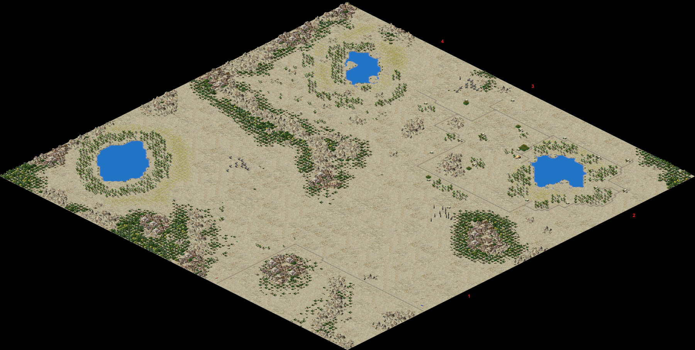

Damascus
Pacify the East.
Overview
- Level: 9 (military)
- Rank: Consul (salary: 60 Dn)
- Climate: desert
- Map size: very large
- Starting Date: January 50 AD (bug, shall be Jan 10 BC)
- Enemy: Egyptians
Starting and Rescue Funds
| Dn | VE | E | N | H | VH
|
|---|
| Starting | 18000 | 12000 | 9000 | 6000 | 4500
|
|---|
| Rescue | 9000 | 6000 | 4500 | 3000 | 2250
|
|---|
Assignment Goals
| Pop | Cult | Prosp | Peace | Favor
|
|---|
| 6000 | 55 | 55 | 50 | 40
|
Local Resources
Trade Partners
| City | Route | Cost | Sells | Buys
|
|---|
| Hierosolyma |  | 450 Dn
|  
|  
|
| Tarsus | | 500 Dn
|   * * 
| 
|
*no marble import in original Caesar IIIStructures Disabled
*Large Temples and Oracle disabled in original Caesar III
Random Events
Collapsing Iron Mines.
Contaminated water.
Invasions
4 invasion points:
- lower SE
- upper SE
- middle NE
- upper NE
Events
| Date | Type | Size | Time/Point | Favor/Target
|
|---|
| Jun 53 AD | request | 10  | 36 months | Favor +8
|
| May 54 AD | invasion | 10 | random | random target
|
| Jul 55 AD | invasion | 20 | 1: lower SE | random target
|
| Jun 56 AD | request | 10 | 24 months | Favor +8
|
| Sep 57 AD | uprising | 30 | random | food chain
|
| Oct 57 AD | trade + | Tarsus buys
|
| Mar 59 AD | invasion | 50 | 1: lower SE | best buildings
|
| Jun 59 AD | request | 10 | 36 months | Favor +8
|
| Aug 60 AD | trade + | Tarsus sells
|
| Mar 61 AD | uprising | 50 | random | best buildings
|
| Mar 62 AD | request | 10 | 24 months | Favor +8
|
| May 62 AD | price + | +15 Dn
|
| Sep 62 AD | price + | +40 Dn
|
| Mar 64 AD | invasion | 70 | 1: lower SE | best buildings
|
| Sep 65 AD | request | 15 | 24 months | Favor +10
|
| Sep 67 AD | uprising | 90 | random | random target
|
| Apr 68 AD | request | 15 | 24 months | Favor +10
|
| Jun 68 AD | price + | +8 Dn
|
| Jul 70 AD | uprising | 32 | random | random target
|
| Sep 70 AD | uprising | 50 | random | best buildings
|
| Oct 73 AD | request | 15 | 24 months | Favor +10
|
| Jun 75 AD | uprising | 60 | random | gold stores
|
| Jun 78 AD | request | 15 | 24 months | Favor +10
|
| May 80 AD | invasion | 40 | 1: lower SE | random target
|
| May 83 AD | request | 15 | 24 months | Favor +10
|
| Mar 85 AD | uprising | 20 | random | random target
|
| May 88 AD | request | 15 | 24 months | Favor +10
|
| Jul 90 AD | invasion | 100 | 1: lower SE | random target
|
| Oct 93 AD | request | 15 | 24 months | Favor +10
|
| Oct 95 AD | uprising | 20 | random | random target
|
| Oct 98 AD | request | 15 | 24 months | Favor +10
|
| Apr 100 AD | invasion | 45 | 1: lower SE | random target
|
| May 103 AD | request | 15 | 24 months | Favor +10
|
| Jul 105 AD | uprising | 25 | random | random target
|
| May 108 AD | request | 15 | 24 months | Favor +10
|
| Apr 110 AD | invasion | 50 | 1: lower SE | random target
|
Navigation
Previous Assignment: (Valentia, peaceful) or (Lutetia, military) • Back to Campaign • Next Assignment: (Londinium, peaceful) or (Sarmizegetusa, military)
Current Assignment: (Caesarea, peaceful) • (Damascus, military)
Map
